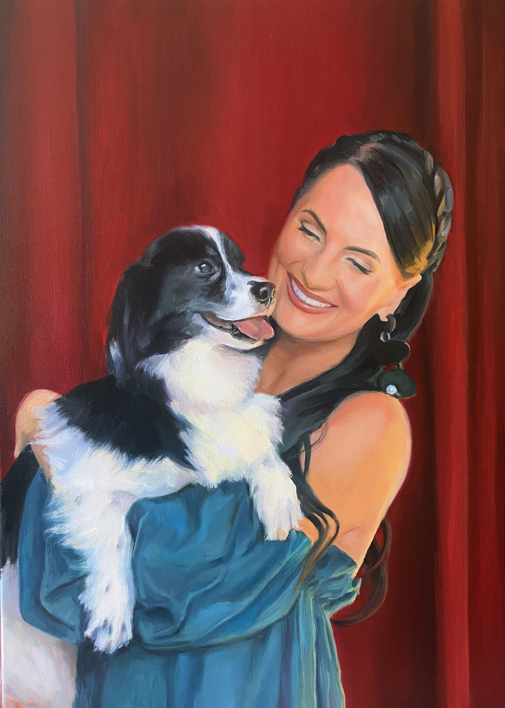
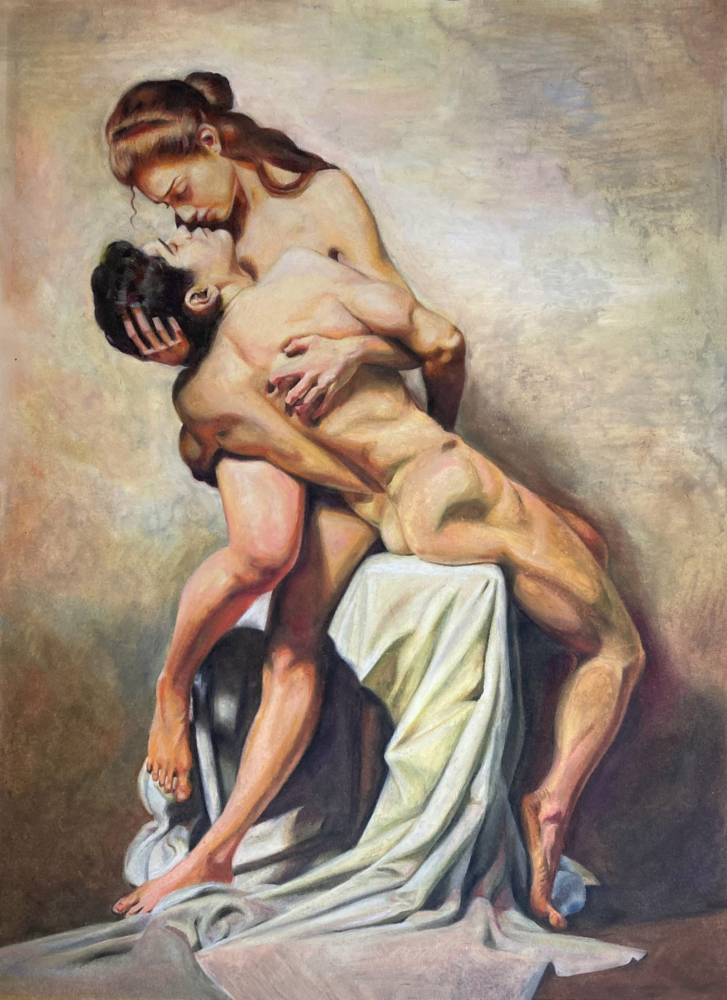
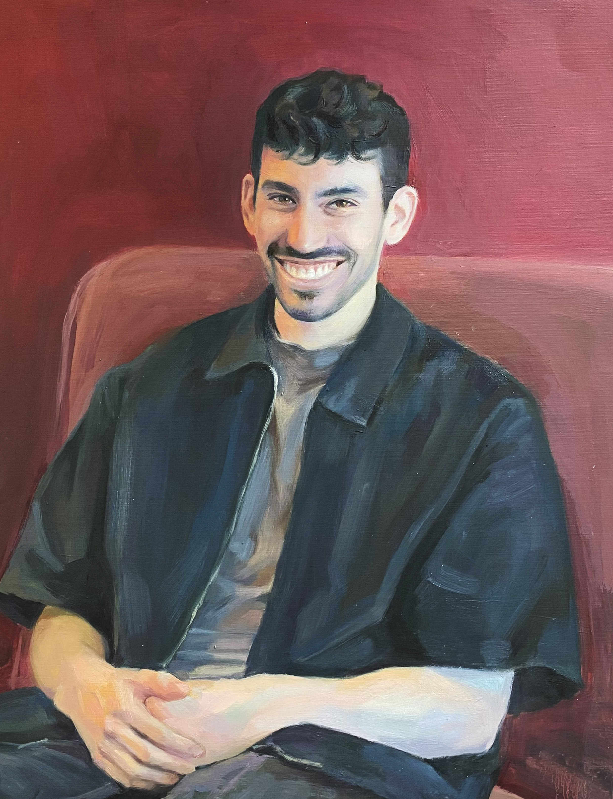
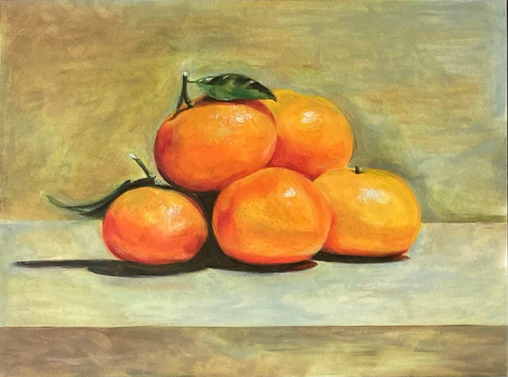
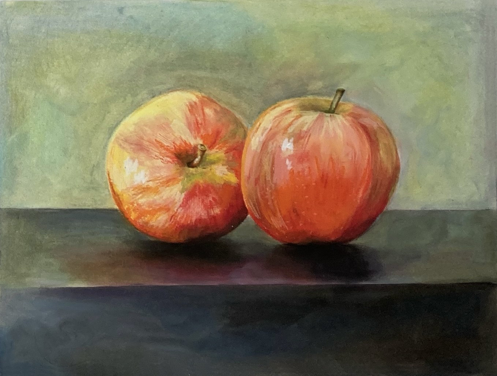
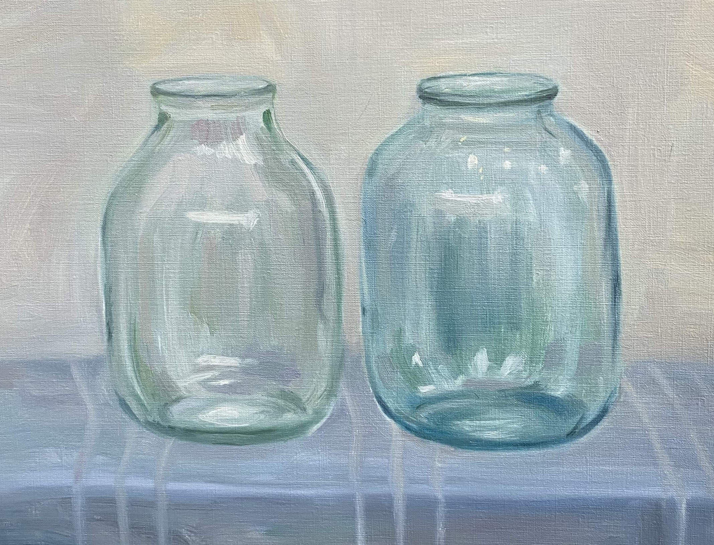
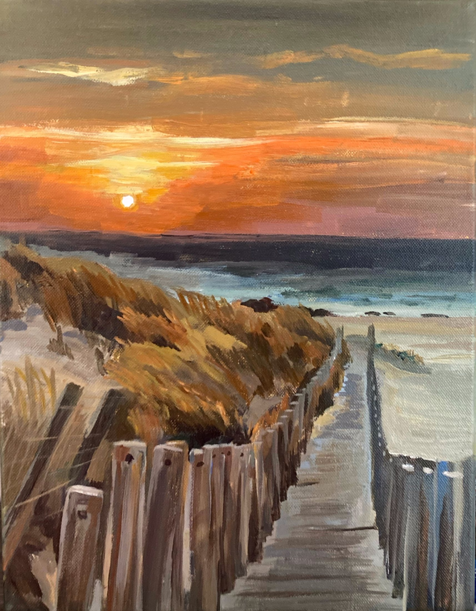
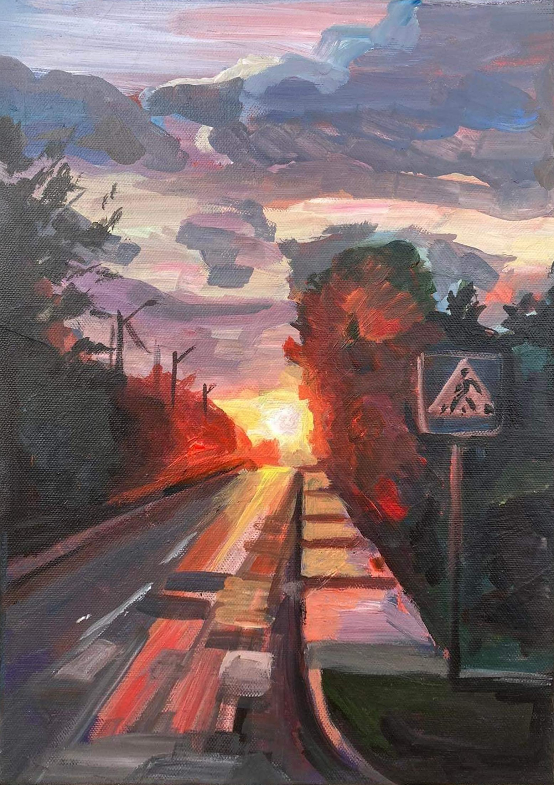

Atrinkti darbai · 2019–2025
Tapyba, sustabdanti akimirką.
Portretai, interjerai, peizažai ir natiurmortai, gimstantys iš spalvos, stebėjimo ir subtilių detalių, suteikiančių akimirkai asmeniškumo.
Peržiūrėti atrinktus darbusAtrinkti paveikslai
Atidžiai stebėta,
neskubant prisiminta.
Mano tapybos centre — žmonės, pažįstami interjerai ir kasdieniai daiktai. Kiekvienas kūrinys prasideda nuo stebėjimo ir tampa atmosferos, gesto bei laiko įrašu.
Pomidorų Valgytojai
Rankos
01 / Žmonės
Portretai
Portretas Su Mėlyna Skrybėle

Portretas Su Šunimi

Holding On

Sėdinčio Vyro Portretas
02 / Daiktai
Natiurmortų studijos
Kriaušės

Apelsinai

Obuoliai

Stiklainiai
Buteliukų Šeimyna
03 / Vietos
Peizažai

Saulėlydis Pajūryje

Kelias Saulėlydyje